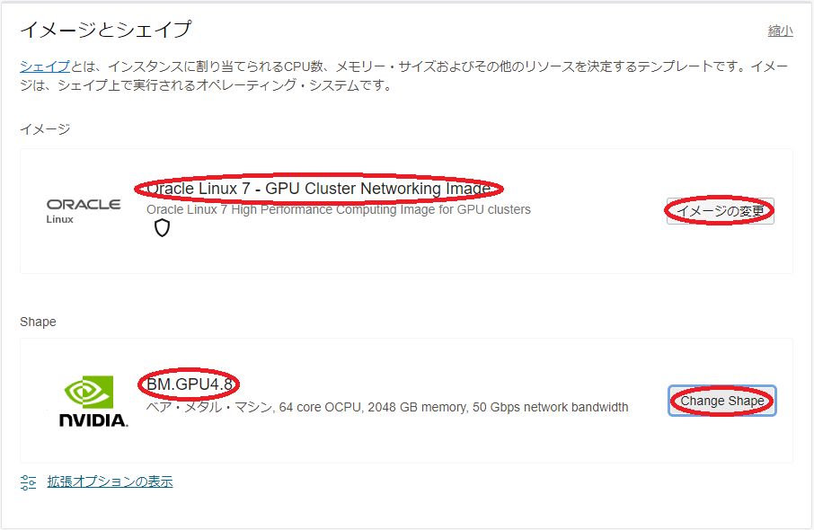
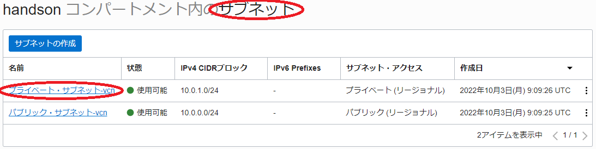
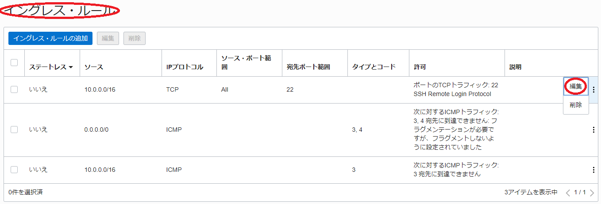

Oracle Cloud Infrastructure（以降OCIと記載）は、以下のサービスを提供することから、1ノードには搭載しきれない多数のGPUを必要とする大規模なAIや機械学習のワークロードを実行する、GPUクラスタを構築するには最適なクラウドサービスです。
- RoCE v2採用の高帯域・低レイテンシRDMAインターコネクト（MPI通信で最大12GB/sの帯域幅と最小1.5μsのレイテンシ）の クラスタ・ネットワーク
- 8枚のNVIDIA A100 40 GBと総帯域幅1.6 Tbps（100 Gbps x 16）のRDMA対応ネットワークインタフェースを搭載するベアメタルGPUシェイプ BM.GPU4.8
このチュートリアルは、AIや機械学習ワークロードに最適なNVIDIA A100 40 GBを搭載するGPUノード（BM.GPU4.8（※））をクラスタ・ネットワークを使用してノード間接続し、大規模なAI・機械学習ワークロードを実行するためのGPUクラスタを構築する際のベースとなるインフラストラクチャを構築、複数ノードに跨るGPU間の通信性能をNCCL（NVIDIA Collective Communication Library）テストプログラム（NCCL Tests）で検証します。
※：シェイプ詳細は以下URLを参照
https://docs.oracle.com/ja-jp/iaas/Content/Compute/References/computeshapes.htm#bm-gpu
このチュートリアルで作成する環境は、ユーザ管理、ホスト名管理、ファイル共有、プログラム開発環境、ジョブスケジューラ等、必要なソフトウェア環境をこの上に整備し、ご自身の要件に沿ったGPUクラスタを構築する際の基礎インフラストラクチャとして利用することが可能です。 なおOCIでは、これらのクラスタ管理に必要なソフトウェアの導入までを自動化するOCIのリソース・マネージャを使用したHPC（GPU）クラスタ構築自動化ソリューションも利用可能です。この詳細は、本チュートリアルの姉妹編である以下ページ HPCクラスタを構築する を参照ください。
https://oracle-japan.github.io/ocitutorials/intermediates/spinup-hpc-cluster
所要時間 : 約1時間
前提条件 : GPUクラスタを収容するコンパートメント(ルート・コンパートメントでもOKです)の作成と、このコンパートメントに対する必要なリソース管理権限がユーザーに付与されていること。
注意 : チュートリアル内の画面ショットについては、OCIの現在のコンソール画面と異なっている場合があります。
0. GPUクラスタ作成事前作業
0-0. GPUクラスタ作成事前作業概要
GPUノードを高速・低レイテンシでノード間接続するOCIのクラスタ・ネットワークは、これに接続するGPUノードと共に作成します。
このため、このGPUノードをTCP接続するVCNと、インターネットから直接アクセス出来ないプライベートサブネットに通常接続されるGPUノードにログインする際の踏み台となるbastionノードを、GPUノードやクラスタ・ネットワークを作成する前に予め作成しておく必要があります。
本章は、これらの前提となるリソースを作成します。
0-1. VCN作成
本章は、GPUノードをTCP接続するVCNを作成します。 VCNの作成は、以下チュートリアルページ クラウドに仮想ネットワーク(VCN)を作る の手順通りに実行し、
https://oracle-japan.github.io/ocitutorials/beginners/creating-vcn
以下のリソースを作成します。
- VCN（10.0.0.0/16）
- パブリックサブネット（10.0.0.0/24）
- プライベートサブネット（10.0.1.0/24）
- インターネット・ゲートウェイ（パブリックサブネットにアタッチ）
- NATゲートウェイ（プライベートサブネットにアタッチ）
- サービス・ゲートウェイ（プライベートサブネットにアタッチ）
- ルート表 x 2（パブリックサブネットとプライベートサブネットにアタッチ）
- セキュリティリスト x 2（パブリックサブネットとプライベートサブネットにアタッチ）
このVCNは、セキュリティリストで以下のアクセス制限が掛けられています。
- インターネットからのアクセス：パブリックサブネットに接続されるインスタンスの22番ポート（SSH）に限定
- インターネットへのアクセス：インターネット上の任意のIPアドレス・ポートに制限なくアクセス可能
0-2. bastionノード作成
本章は、GPUノードにログインする際の踏み台となるbastinノードを作成します。 bastionノードの作成は、以下チュートリアルページ インスタンスを作成する の手順を参考に、
https://oracle-japan.github.io/ocitutorials/beginners/creating-compute-instance
ご自身の要件に沿ったインスタンスを、先の手順で作成したVCNとパブリックサブネットを指定して作成します。本チュートリアルは、以下属性のインスタンスをbastionノードとして作成します。
- イメージ : Oracle Linux 7.9
- シェイプ : VM.Optimized3.Flex（1 OCPU）
- SSHキーの追加 : bastionノードにログインする際使用するSSH秘密鍵に対応する公開鍵
次に、このbastionノード上でSSHの鍵ペアを作成します。このSSH鍵は、bastionノードからGPUノードにログインする際に使用します。 先のチュートリアル インスタンスを作成する に記載のインスタンスへの接続方法に従いbastionノードにopcユーザでSSHログインし、以下のコマンドでSSH鍵ペアを作成、作成された公開鍵を後のクラスタ・ネットワーク作成手順で指定します。
> ssh-keygen
Generating public/private rsa key pair.
Enter file in which to save the key (/home/opc/.ssh/id_rsa):
Enter passphrase (empty for no passphrase):
Enter same passphrase again:
Your identification has been saved in /home/opc/.ssh/id_rsa.
Your public key has been saved in /home/opc/.ssh/id_rsa.pub.
The key fingerprint is:
SHA256:Ska1aH1fQkN+Ahzi6xnqICSEHN8HUKDlujhEagu2Uc8 opc@bastion
The keys randomart image is:
+---[RSA 2048]----+
| . ++o o.oo+ |
|o * . .= o.+ . |
|.= + .+.+ . + o |
|+ o oo. o . = |
|+*. Eo S . |
|*o= o + o |
|o+. . o o |
| . . o |
| . |
+----[SHA256]-----+
> cat .ssh/id_rsa.pub
ssh-rsa AAAAB3NzaC1yc2EAAAADAQABAAABAQC7Lna2m3TPiPKL/lHNK4GK2bkADRzm4674uwO9PHUqEPKVv+HBhTZ+zHOPSkYsOEubgeB9xpuKe+Z7ats0RbdXzT1bDWxcsvrMOdUVHQ9zv54eBSz+wEJO08zuxCjetQ2//6NRlYzoBs5/T1+DWg7lJuNadeyqXf1IaZGxRyfbCyXPzOnhL3TS/S7ydN0/313PsqAYj7PBNlx86WT/0qeNYsefjVmn54PKp1waNDQbOkiXi9Emx9uIKA1TCMCVSauZEI274P6orPvwggbX/HZ5Q8eRta2uw3LmzSRJUlrLBxi5xzhVOSNOXl29y2+U5+Q5/F2AxGSxUbW18AdOihuX opc@bastion
次に、以降作成するGPUノードのDNS名前解決をイニシャルホスト名で行えるようにするため、/etc/resolv.confファイルのsearch行に、先に作成したプライベートサブネットのDNSドメイン名を以下のように追加します。
> diff /etc/resolv.conf_org /etc/resolv.conf
7c7
< search vcn.oraclevcn.com sub11010929110.vcn.oraclevcn.com
---
> search vcn.oraclevcn.com sub11010929110.vcn.oraclevcn.com sub11010929111.vcn.oraclevcn.com
なおプライベートサブネットのDNSドメイン名は、OCIコンソール上で当該プライベートサブネットの サブネット詳細 メニューから、以下のように確認することが出来ます。

この修正は、このままではOS再起動により元に戻ってしまうため、以下のコマンドでこの修正が上書きされないようにします。
> sudo chattr -R +i /etc/resolv.conf
1. GPUクラスタ作成
1-0. GPUクラスタ作成概要
GPUノードのインターコネクトネットワークに使用するクラスタ・ネットワークは、その下層にOCIのインスタンス・プールを使用し、インスタンス・プールが持つ同一イメージのインスタンスを複製する機能により、クラスタ・ネットワークに接続するGPUノードを指定ノード数デプロイします。
またインスタンス・プールは、その下層にOCIのインスタンス構成を使用し、インスタンス構成に指定した属性を持つインスタンスを複製します。
クラスタ・ネットワークに接続するGPUノードは、OS（Oracle Linux 7.9）起動時点でクラスタ・ネットワークに接続するRDMAインタフェースが作成されていないため、デプロイ後の最初のOS起動時のみ実行されるOCIのcloud-initを利用して、この作成を行います。また本チュートリアルは、GPUノードに使用するBM.GPU4.8に装備されるNVMeローカルディスクのファイルシステム作成も、このcloud-initから行います。
以上より、GPUクラスタの作成は、以下の手順を経て行います。
- cloud-init設定ファイル作成
- インスタンス構成作成
- クラスタ・ネットワーク作成
なおインスタンス・プールは、クラスタ・ネットワークを作成することで自動的に作成されるため、改めて作成する必要はありません。
1-1. cloud-init設定ファイル作成
本章は、cloud-init設定ファイルを作成します。
cloud-initは、主要なクラウドサービスプロバイダーで利用可能なインスタンス初期化のための仕組みで、cloud-initが用意する文法に沿った設定ファイルを作成しこれを指定することで、インスタンスデプロイ後に必要な様々なOSレベルのカスタマイズを適用することが可能になります。
本チュートリアルは、このcloud-initを以下の目的で使用します。
- NCCLインストール
- NVMeローカルディスクファイルシステム作成
- firewalld停止
- RDMAインタフェース作成
以下は、本チュートリアルで使用するBM.GPU4.8用のcloud-init設定ファイルで、OCIコンソールを実行している端末上にテキストファイルで保存します。
#cloud-config
yum_repos:
#
# To install NCCL
cuda-rhel7-x86_64:
name: cuda-rhel7-x86_64
baseurl: https://developer.download.nvidia.com/compute/cuda/repos/rhel7/x86_64
enabled: true
gpgcheck: true
repo_gpgcheck: true
gpgkey: https://developer.download.nvidia.com/compute/cuda/repos/rhel7/x86_64/D42D0685.pub
packages:
#
# Install NCCL
- libnccl
- libnccl-devel
- libnccl-static
runcmd:
#
# Mount NVMe local storage
- vgcreate nvme /dev/nvme0n1 /dev/nvme1n1 /dev/nvme2n1 /dev/nvme3n1
- lvcreate -l 100%FREE nvme
- mkfs.xfs -L localscratch /dev/nvme/lvol0
- mkdir -p /mnt/localdisk
- echo "LABEL=localscratch /mnt/localdisk/ xfs defaults,noatime 0 0" >> /etc/fstab
- mount /mnt/localdisk
#
# Stop firewalld
- systemctl stop firewalld
- systemctl disable firewalld
#
# Set up 16 RDMA interfaces
- echo "TYPE=\"Ethernet\"" > /etc/sysconfig/network-scripts/ifcfg-enp12s0f0
- echo "BOOTPROTO=\"none\"" >> /etc/sysconfig/network-scripts/ifcfg-enp12s0f0
- echo "IPADDR=192.168.0.`ifconfig enp45s0f0 | head -2 | tail -1 | awk '{print $2}' | awk -F. '{print $4}'`" >> /etc/sysconfig/network-scripts/ifcfg-enp12s0f0
- echo "NETMASK=255.255.255.0" >> /etc/sysconfig/network-scripts/ifcfg-enp12s0f0
- echo "DEFROUTE=\"no\"" >> /etc/sysconfig/network-scripts/ifcfg-enp12s0f0
- echo "PEERDNS=\"no\"" >> /etc/sysconfig/network-scripts/ifcfg-enp12s0f0
- echo "PEERROUTES=\"no\"" >> /etc/sysconfig/network-scripts/ifcfg-enp12s0f0
- echo "IPV4_FAILURE_FATAL=\"no\"" >> /etc/sysconfig/network-scripts/ifcfg-enp12s0f0
- echo "IPV6INIT=\"no\"" >> /etc/sysconfig/network-scripts/ifcfg-enp12s0f0
- echo "IPV6_FAILURE_FATAL=\"no\"" >> /etc/sysconfig/network-scripts/ifcfg-enp12s0f0
- echo "NAME=\"System enp12s0f0\"" >> /etc/sysconfig/network-scripts/ifcfg-enp12s0f0
- echo "DEVICE=\"enp12s0f0\"" >> /etc/sysconfig/network-scripts/ifcfg-enp12s0f0
- echo "ONBOOT=\"yes\"" >> /etc/sysconfig/network-scripts/ifcfg-enp12s0f0
- echo "NM_CONTROLLED=\"no\"" >> /etc/sysconfig/network-scripts/ifcfg-enp12s0f0
- ifup enp12s0f0
- sed 's/192.168.0/192.168.1/g' /etc/sysconfig/network-scripts/ifcfg-enp12s0f0 > /etc/sysconfig/network-scripts/ifcfg-enp12s0f1
- sed -i 's/enp12s0f0/enp12s0f1/g' /etc/sysconfig/network-scripts/ifcfg-enp12s0f1
- ifup enp12s0f1
- sed 's/192.168.0/192.168.2/g' /etc/sysconfig/network-scripts/ifcfg-enp12s0f0 > /etc/sysconfig/network-scripts/ifcfg-enp22s0f0
- sed -i 's/enp12s0f0/enp22s0f0/g' /etc/sysconfig/network-scripts/ifcfg-enp22s0f0
- ifup enp22s0f0
- sed 's/192.168.0/192.168.3/g' /etc/sysconfig/network-scripts/ifcfg-enp12s0f0 > /etc/sysconfig/network-scripts/ifcfg-enp22s0f1
- sed -i 's/enp12s0f0/enp22s0f1/g' /etc/sysconfig/network-scripts/ifcfg-enp22s0f1
- ifup enp22s0f1
- sed 's/192.168.0/192.168.4/g' /etc/sysconfig/network-scripts/ifcfg-enp12s0f0 > /etc/sysconfig/network-scripts/ifcfg-enp72s0f0
- sed -i 's/enp12s0f0/enp72s0f0/g' /etc/sysconfig/network-scripts/ifcfg-enp72s0f0
- ifup enp72s0f0
- sed 's/192.168.0/192.168.5/g' /etc/sysconfig/network-scripts/ifcfg-enp12s0f0 > /etc/sysconfig/network-scripts/ifcfg-enp72s0f1
- sed -i 's/enp12s0f0/enp72s0f1/g' /etc/sysconfig/network-scripts/ifcfg-enp72s0f1
- ifup enp72s0f1
- sed 's/192.168.0/192.168.6/g' /etc/sysconfig/network-scripts/ifcfg-enp12s0f0 > /etc/sysconfig/network-scripts/ifcfg-enp76s0f0
- sed -i 's/enp12s0f0/enp76s0f0/g' /etc/sysconfig/network-scripts/ifcfg-enp76s0f0
- ifup enp76s0f0
- sed 's/192.168.0/192.168.7/g' /etc/sysconfig/network-scripts/ifcfg-enp12s0f0 > /etc/sysconfig/network-scripts/ifcfg-enp76s0f1
- sed -i 's/enp12s0f0/enp76s0f1/g' /etc/sysconfig/network-scripts/ifcfg-enp76s0f1
- ifup enp76s0f1
- sed 's/192.168.0/192.168.8/g' /etc/sysconfig/network-scripts/ifcfg-enp12s0f0 > /etc/sysconfig/network-scripts/ifcfg-enp138s0f0
- sed -i 's/enp12s0f0/enp138s0f0/g' /etc/sysconfig/network-scripts/ifcfg-enp138s0f0
- ifup enp138s0f0
- sed 's/192.168.0/192.168.9/g' /etc/sysconfig/network-scripts/ifcfg-enp12s0f0 > /etc/sysconfig/network-scripts/ifcfg-enp138s0f1
- sed -i 's/enp12s0f0/enp138s0f1/g' /etc/sysconfig/network-scripts/ifcfg-enp138s0f1
- ifup enp138s0f1
- sed 's/192.168.0/192.168.10/g' /etc/sysconfig/network-scripts/ifcfg-enp12s0f0 > /etc/sysconfig/network-scripts/ifcfg-enp148s0f0
- sed -i 's/enp12s0f0/enp148s0f0/g' /etc/sysconfig/network-scripts/ifcfg-enp148s0f0
- ifup enp148s0f0
- sed 's/192.168.0/192.168.11/g' /etc/sysconfig/network-scripts/ifcfg-enp12s0f0 > /etc/sysconfig/network-scripts/ifcfg-enp148s0f1
- sed -i 's/enp12s0f0/enp148s0f1/g' /etc/sysconfig/network-scripts/ifcfg-enp148s0f1
- ifup enp148s0f1
- sed 's/192.168.0/192.168.12/g' /etc/sysconfig/network-scripts/ifcfg-enp12s0f0 > /etc/sysconfig/network-scripts/ifcfg-enp195s0f0
- sed -i 's/enp12s0f0/enp195s0f0/g' /etc/sysconfig/network-scripts/ifcfg-enp195s0f0
- ifup enp195s0f0
- sed 's/192.168.0/192.168.13/g' /etc/sysconfig/network-scripts/ifcfg-enp12s0f0 > /etc/sysconfig/network-scripts/ifcfg-enp195s0f1
- sed -i 's/enp12s0f0/enp195s0f1/g' /etc/sysconfig/network-scripts/ifcfg-enp195s0f1
- ifup enp195s0f1
- sed 's/192.168.0/192.168.14/g' /etc/sysconfig/network-scripts/ifcfg-enp12s0f0 > /etc/sysconfig/network-scripts/ifcfg-enp209s0f0
- sed -i 's/enp12s0f0/enp209s0f0/g' /etc/sysconfig/network-scripts/ifcfg-enp209s0f0
- ifup enp209s0f0
- sed 's/192.168.0/192.168.15/g' /etc/sysconfig/network-scripts/ifcfg-enp12s0f0 > /etc/sysconfig/network-scripts/ifcfg-enp209s0f1
- sed -i 's/enp12s0f0/enp209s0f1/g' /etc/sysconfig/network-scripts/ifcfg-enp209s0f1
- ifup enp209s0f1
このcloud-init設定ファイルのRDMAインタフェース設定は、プライベートサブネットに接続するTCP接続（インターフェース名：enp45s0f0）用IPアドレスの4フィールド目の値を取得（この値をyとする）し、この値を4フィールド目に持つ192.168.x.y/24（x = 0 - 15）を、BM.GPU4.8が有する16個のクラスタ・ネットワーク接続用RDMAインタフェースのIPアドレスに使用します。
1-2. インスタンス構成作成
本章は、インスタンス構成を作成します。
インスタンス構成は、インスタンスをデプロイする際のひな型設定で、一度インスタンス構成を作成すると、これを利用して簡単に同じ属性のインスタンスをデプロイすることが出来るようになります。
-
OCIコンソールにログインし、クラスタ・ネットワークをデプロイするリージョンを選択後、 コンピュート → インスタンス構成 とメニューを辿ります。
-
表示される以下画面で、インスタンス構成の作成 ボタンをクリックします。
-
表示される インスタンス構成の作成 画面で、以下の情報を入力し 作成 ボタンをクリックします。なお、ここに記載のないフィールドは、デフォルトのままとします。
3.1 インスタンス構成情報 フィールド
- 名前 ：インスタンス構成に付与する名前
- コンパートメントに作成 ：インスタンス構成を作成するコンパートメント

3.2 インスタンスの作成先のコンパートメント フィールド：インスタンスをデプロイするコンパートメント
3.3 配置 フィールド
- 可用性ドメイン ：インスタンスをデプロイする可用性ドメイン

3.4 イメージとシェイプ フィールド

- イメージ ：Oracle Linux 7 - GPU Cluster Networking Image (イメージの変更 ボタンをクリックして表示される以下 すべてのイメージの参照 サイドバーで イメージ・ソース フィールドに Oracleイメージ を選択し検索フィールドに gpu と入力して表示される Oracle Linux 7 - GPU Cluster Networking Image を選択し イメージの選択 ボタンをクリック）

ここで指定しているイメージは、OCIのマーケットプレースから提供するOracke Linux 7.9をベースに作成されたクラスタ・ネットワークに接続するために必要なソフトウェアとGPU関連ソフトウェアが含まれるイメージ（以降 GPUイメージ と呼称）です。
- Shape ：BM.GPU4.8 (Change Shape ボタンをクリックして表示される以下 すべてのシェイプの参照 サイドバーで ベア・メタル・マシン をクリックして表示される BM.GPU4.8 を選択し 次のドキュメントを確認した上でこれに同意します チェックボックスをチェックし シェイプの選択 ボタンをクリック）

3.5 ネットワーキング フィールド
- プライマリ・ネットワーク ： 先に作成したVCNを選択
- サブネット ：先に作成したプライベートサブネットを選択
3.6 SSHキーの追加 フィールド
- SSHキー ：先にbastionで作成したSSH鍵の公開鍵（ 以下 公開キーの貼付け ラジオボタンを選択することで入力フィールドを表示）

3.7 管理 フィールド（以下 拡張オプションの表示 ボタンを選択して表示）

- cloud-initスクリプト ：先に作成したcloud-init設定ファイルを選択（ 参照 ボタンでファイルを選択）

1-3. クラスタ・ネットワーク作成
本章は、先に作成したインスタンス構成を使用して、クラスタ・ネットワークを作成します。
-
OCIコンソールにログインし、クラスタ・ネットワークをデプロイするリージョンを選択後、 コンピュート → クラスタ・ネットワーク とメニューを辿ります。
-
表示される以下画面で、クラスタ・ネットワークの作成 ボタンをクリックします。

-
表示される クラスタ・ネットワークの作成 画面で、以下の情報を入力し クラスタ・ネットワークの作成 ボタンをクリックします。なお、ここに記載のないフィールドは、デフォルトのままとします。
3.1 名前 フィールド：クラスタ・ネットワークに付与する名前

3.2 コンパートメントに作成 フィールド：クラスタ・ネットワークをデプロイするコンパートメント

3.2 可用性ドメイン フィールド：クラスタ・ネットワークをデプロイする可用性ドメイン
3.3 ネットワーキングの構成 フィールド
- 仮想クラウド・ネットワーク ：先に作成したVCNを選択
- サブネット ：先に作成したプライベートサブネットを選択

3.4 インスタンス・プールの構成 フィールド
- インスタンス・プール名 ：作成されるインスタンス・プールに付与する名前
- インスタンス数 ：デプロイするGPUノードのノード数
- インスタンス構成 ：先に作成したインスタンス構成

-
表示される以下 クラスタ・ネットワーク作業リクエスト 画面で、左上のステータスが プロビジョニング中 と表示されれば、クラスタ・ネットワークとGPUノードの作成が実施されています。

ステータスが 実行中 となれば、クラスタ・ネットワークとGPUノードの作成が完了しています。
2. GPUノード確認
本章は、デプロイされたGPUノードにログインし、環境を確認します。
2.1. GPUノードログイン
GPUノードは、プライベートサブネットに接続されており、インターネットからログインすることが出来ないため、bastionノードを経由してSSHログインします。bastionノードからGPUノードへのログインは、GPUノードのイニシャルホスト名を使用します。
GPUノードのイニシャルホスト名は、OCIコンソールでGPUノードをデプロイしたリージョンを選択後、 コンピュート → インスタンス とメニューを辿り、以下のインスタンス一覧からそのイニシャルホスト名を確認します。
またこの画面は、GPUノードのIPアドレスも表示されており、これを使用してbastionからSSHログインすることも可能です。

GPUノードへのログインは、以下のようにbastionからopcユーザでSSHログインします。
> ssh inst-wyr6m-comp
The authenticity of host 'inst-wyr6m-comp (10.0.1.61)' cant be established.
ECDSA key fingerprint is SHA256:z1Hqcm+vNKQLCvqL6t1fqCgqpqo+onshYP7tI1AcwYU.
ECDSA key fingerprint is MD5:0a:86:6f:d3:86:36:d0:7d:74:3e:8c:3f:cd:4c:3a:68.
Are you sure you want to continue connecting (yes/no)? yes
Warning: Permanently added 'inst-wyr6m-comp,10.0.1.61' (ECDSA) to the list of known hosts.
>
2.2. cloud-init完了確認
cloud-initは、GPUノードが起動してSSHログインできる状態であっても、その処理が継続している可能性があるため、以下コマンドでそのステータスを表示し、 done となっていることでcloud-initの処理完了を確認します。
ステータスが running の場合は、cloud-initの処理が継続中のため、処理が完了するまで待ちます。
> sudo cloud-init status
status: done
2.3. GPUノードファイルシステム確認
GPUノードは、以下のようにNVMe領域が/mnt/localdiskにマウントされています。
> df -h /mnt/localdisk
Filesystem Size Used Avail Use% Mounted on
/dev/mapper/nvme-lvol0 25T 34M 25T 1% /mnt/localdisk
3. NCCL通信性能検証
3-0. NCCL通信性能検証概要
本章は、NCCLの通信性能を検証するためのツールである NCCL Tests を使用し、構築したGPUクラスタ内のGPU間通信性能を確認します。
NCCL Testsは、ノードを跨るGPU間の通信性能を計測する際にMPIを使用します。ここで使用するMPIは、GPUノードに使用したGPUイメージに予め含まれる、OpenMPIです。
またOpenMPIをGPUノード間で実行するためには、MPIプログラムをmpirun等で起動するGPUノード（いわゆるヘッドノード）からMPIプログラム実行に参加する他の全てのGPUノードにパスフレーズ無しでSSH接続できる必要があります。
またOpenMPIの実行は、これを実行するGPUノード間で必要なポートにアクセス出来る必要があるため、先に作成したプライベートサブネットのセキュリティリストを修正する必要があります。
以上より、本章で実施するNCCL通信性能検証は、以下の手順を経て行います。
- GPUノード間SSH接続環境構築
- プライベートサブネットセキュリティリスト修正
- NCCL Testsビルド
- NCCL Tests実行
本チュートリアルは、2ノードに跨る16枚のGPUで16ポートのRDMAインタフェースを使用したAll Reduce通信性能を計測し、以下性能が出ています。
- 帯域（busbw）：約 87 GB/s
- レイテンシ：約 35 μs
3-1. GPUノード間SSH接続環境構築
本章は、先にbastionノードで作成したSSH秘密鍵を全てのGPUノードにコピーすることで、全てのGPUノード間でパスフレーズ無しのSSH接続環境を実現します。
まず初めに、先に確認したOCIコンソールのインスタンス一覧を使用し、以下のように全てのGPUノードのイニシャルホスト名を含むファイルをbastion上に作成します。
> cat hostlist.txt
inst-wyr6m-comp
inst-9wead-comp
次にこのファイルを使用し、以下コマンドで全GPUノードにbastionノードのSSH秘密鍵をコピーします。この際、GPUノード毎に接続確認を求められるため、全てに yes を入力します。
> for hname in `cat hostlist.txt`; do echo $hname; scp -p ~/.ssh/id_rsa $hname:~/.ssh/; done
inst-wyr6m-comp
The authenticity of host 'inst-wyr6m-comp (10.0.1.61)' canott be established.
ECDSA key fingerprint is SHA256:z1Hqcm+vNKQLCvqL6t1fqCgqpqo+onshYP7tI1AcwYU.
ECDSA key fingerprint is MD5:0a:86:6f:d3:86:36:d0:7d:74:3e:8c:3f:cd:4c:3a:68.
Are you sure you want to continue connecting (yes/no)? yes
Warning: Permanently added 'inst-wyr6m-comp,10.0.1.61' (ECDSA) to the list of known hosts.
id_rsa 100% 1675 1.9MB/s 00:00
inst-9wead-comp
The authenticity of host 'inst-9wead-comp (10.0.1.62)' cannot be established.
ECDSA key fingerprint is SHA256:alxTYf1T2VGbwLYSuvBs5X29YorXB40rAwWWuVDKxPA.
ECDSA key fingerprint is MD5:14:73:f4:87:3c:43:72:b5:cc:b2:e8:37:15:2f:20:3e.
Are you sure you want to continue connecting (yes/no)? yes
Warning: Permanently added 'inst-9wead-comp,10.0.1.62' (ECDSA) to the list of known hosts.
id_rsa 100% 1675 1.8MB/s 00:00
次に、先のSSH秘密鍵のコピーでbastionノードに作成された全GPUノードのエントリを含むknown_hostsファイルを、以下コマンドで全GPUノードにコピーします。
> for hname in `cat hostlist.txt`; do echo $hname; scp -p ~/.ssh/known_hosts $hname:~/.ssh/; done
inst-wyr6m-comp
known_hosts 100% 440 631.9KB/s 00:00
inst-9wead-comp
known_hosts 100% 440 470.6KB/s 00:00
次に、後のNCCL Testsを実行する際に使用する、先に作成したGPUノードのイニシャルホスト名を格納したファイルを、以下コマンドで全GPUノードにコピーします。
> for hname in `cat hostlist.txt`; do echo $hname; scp -p ./hostlist.txt $hname:~/; done
inst-niyx0-comp
hostlist.txt 100% 32 113.3KB/s 00:00
inst-sercg-comp
hostlist.txt 100% 32 146.3KB/s 00:00
3-2. プライベートサブネットセキュリティリスト修正
本章は、プライベートサブネットのセキュリティリストを以下の手順で修正します。
-
OCIコンソールにログインし、GPUノードをデプロイしたリージョンを選択後、 ネットワーキング → 仮想クラウド・ネットワーク とメニューを辿ります。
-
表示される画面で、先に作成した仮想クラウド・ネットワークをクリックします。
-
表示される以下 サブネット フィールドで、先に作成したプライベートサブネットをクリックします。

-
表示される以下 セキュリティ・リスト フィールドで、プライベートサブネットに適用されているセキュリティリストをクリックします。

-
表示される以下 イングレス・ルール フィールドで、SSHアクセスを許可しているルールの 編集 メニューをクリックします。

-
表示される以下 イングレス・ルールの編集 サイドバーで、 IPプロトコル フィールドを すべてのプロトコル に変更し、 変更の保存 ボタンをクリックします。

-
表示される以下 イングレス・ルール フィールドで、変更したルールの IPプロトコル が すべてのプロトコル に変更されたことを確認します。

3-3. NCCL Testsビルド
本章は、NCCL TestsプログラムをGitHubからダウンロード、ビルドします。
GPUノードのうちの1ノードにopcユーザでログインし、以下のコマンドを実行します。
> git clone https://github.com/NVIDIA/nccl-tests.git
> cd nccl-tests
> make MPI=1 MPI_HOME=/usr/mpi/gcc/openmpi-4.1.2a1 CUDA_HOME=/usr/local/cuda-11.6 NCCL_HOME=/usr/lib64
次に、ビルドしたバイナリを含むディレクトリを、以下のコマンドで他のGPUノード全てにコピーします。
> cd ..
> scp -pr ./nccl-tests other_gpu_node_2:~
:
:
> scp -pr ./nccl-tests other_gpu_node_n:~
3-4. NCCL Tests実行
本章は、NCCL Testsプログラムを実行します。
GPUノードのうちの1ノードにopcユーザでログインし、以下のコマンドを実行します。
> source /usr/mpi/gcc/openmpi-4.1.2a1/bin/mpivars.sh
> mpirun -n 16 -npernode 8 -hostfile ./hostlist.txt -x UCX_NET_DEVICES=mlx5_0:1 -x NCCL_IB_HCA="mlx5_0,mlx5_1,mlx5_2,mlx5_3,mlx5_6,mlx5_7,mlx5_8,mlx5_9,mlx5_10,mlx5_11,mlx5_12,mlx5_13,mlx5_14,mlx5_15,mlx5_16,mlx5_17" ./nccl-tests/build/all_reduce_perf -b 64 -e 1G -f 2 -t 1 -g 1
# nThread 1 nGpus 1 minBytes 64 maxBytes 1073741824 step: 2(factor) warmup iters: 5 iters: 20 agg iters: 1 validation: 1 graph: 0
#
# Using devices
# Rank 0 Group 0 Pid 15147 on inst-edjui-gpu4 device 0 [0x0f] NVIDIA A100-SXM4-40GB
# Rank 1 Group 0 Pid 15148 on inst-edjui-gpu4 device 1 [0x15] NVIDIA A100-SXM4-40GB
# Rank 2 Group 0 Pid 15149 on inst-edjui-gpu4 device 2 [0x51] NVIDIA A100-SXM4-40GB
# Rank 3 Group 0 Pid 15150 on inst-edjui-gpu4 device 3 [0x54] NVIDIA A100-SXM4-40GB
# Rank 4 Group 0 Pid 15151 on inst-edjui-gpu4 device 4 [0x8d] NVIDIA A100-SXM4-40GB
# Rank 5 Group 0 Pid 15152 on inst-edjui-gpu4 device 5 [0x92] NVIDIA A100-SXM4-40GB
# Rank 6 Group 0 Pid 15154 on inst-edjui-gpu4 device 6 [0xd6] NVIDIA A100-SXM4-40GB
# Rank 7 Group 0 Pid 15156 on inst-edjui-gpu4 device 7 [0xda] NVIDIA A100-SXM4-40GB
# Rank 8 Group 0 Pid 13246 on inst-vdgkk-gpu4 device 0 [0x0f] NVIDIA A100-SXM4-40GB
# Rank 9 Group 0 Pid 13247 on inst-vdgkk-gpu4 device 1 [0x15] NVIDIA A100-SXM4-40GB
# Rank 10 Group 0 Pid 13248 on inst-vdgkk-gpu4 device 2 [0x51] NVIDIA A100-SXM4-40GB
# Rank 11 Group 0 Pid 13249 on inst-vdgkk-gpu4 device 3 [0x54] NVIDIA A100-SXM4-40GB
# Rank 12 Group 0 Pid 13250 on inst-vdgkk-gpu4 device 4 [0x8d] NVIDIA A100-SXM4-40GB
# Rank 13 Group 0 Pid 13251 on inst-vdgkk-gpu4 device 5 [0x92] NVIDIA A100-SXM4-40GB
# Rank 14 Group 0 Pid 13252 on inst-vdgkk-gpu4 device 6 [0xd6] NVIDIA A100-SXM4-40GB
# Rank 15 Group 0 Pid 13255 on inst-vdgkk-gpu4 device 7 [0xda] NVIDIA A100-SXM4-40GB
#
# out-of-place in-place
# size count type redop root time algbw busbw #wrong time algbw busbw #wrong
# (B) (elements) (us) (GB/s) (GB/s) (us) (GB/s) (GB/s)
64 16 float sum -1 35.23 0.00 0.00 0 34.31 0.00 0.00 0
128 32 float sum -1 35.22 0.00 0.01 0 35.22 0.00 0.01 0
256 64 float sum -1 36.09 0.01 0.01 0 36.94 0.01 0.01 0
512 128 float sum -1 37.11 0.01 0.03 0 36.90 0.01 0.03 0
1024 256 float sum -1 40.47 0.03 0.05 0 39.55 0.03 0.05 0
2048 512 float sum -1 42.55 0.05 0.09 0 41.24 0.05 0.09 0
4096 1024 float sum -1 43.34 0.09 0.18 0 41.79 0.10 0.18 0
8192 2048 float sum -1 45.26 0.18 0.34 0 44.38 0.18 0.35 0
16384 4096 float sum -1 49.05 0.33 0.63 0 48.80 0.34 0.63 0
32768 8192 float sum -1 49.97 0.66 1.23 0 49.55 0.66 1.24 0
65536 16384 float sum -1 51.09 1.28 2.41 0 50.74 1.29 2.42 0
131072 32768 float sum -1 59.96 2.19 4.10 0 59.27 2.21 4.15 0
262144 65536 float sum -1 61.42 4.27 8.00 0 60.98 4.30 8.06 0
524288 131072 float sum -1 67.89 7.72 14.48 0 67.31 7.79 14.60 0
1048576 262144 float sum -1 83.56 12.55 23.53 0 83.09 12.62 23.66 0
2097152 524288 float sum -1 110.4 19.00 35.62 0 110.1 19.05 35.72 0
4194304 1048576 float sum -1 168.5 24.90 46.68 0 161.6 25.96 48.67 0
8388608 2097152 float sum -1 256.6 32.69 61.29 0 255.2 32.87 61.64 0
16777216 4194304 float sum -1 454.7 36.89 69.18 0 457.8 36.64 68.71 0
33554432 8388608 float sum -1 857.6 39.12 73.36 0 864.7 38.81 72.76 0
67108864 16777216 float sum -1 1635.9 41.02 76.92 0 1646.0 40.77 76.45 0
134217728 33554432 float sum -1 3111.9 43.13 80.87 0 3111.9 43.13 80.87 0
268435456 67108864 float sum -1 6147.2 43.67 81.88 0 6143.9 43.69 81.92 0
536870912 134217728 float sum -1 12242 43.86 82.23 0 12240 43.86 82.24 0
1073741824 268435456 float sum -1 23093 46.50 87.18 0 23108 46.47 87.12 0
# Out of bounds values : 0 OK
# Avg bus bandwidth : 30.037
#
4. GPUクラスタの削除
本章は、クラスタ・ネットワークを終了することで、作成したクラスタ・ネットワークとGPUノードを削除します。
-
OCIコンソールメニューから コンピュート → クラスタ・ネットワーク を選択し、表示される以下画面で作成したクラスタ・ネットワークの 終了 メニューをクリックします。

クラスタ・ネットワークの 状態 が 終了済 となれば、削除が完了しています。
これで、このチュートリアルは終了です。